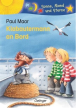

Weil die Zwillinge Martin und Miriam am 22. Februar geboren sind, konnen sie den kleinen Klabautergesellen an Bord des Kreuzfahrtschiffes entdecken und ihm helfen, seine Klabautermannprufung zu bestehen. Ab 7.